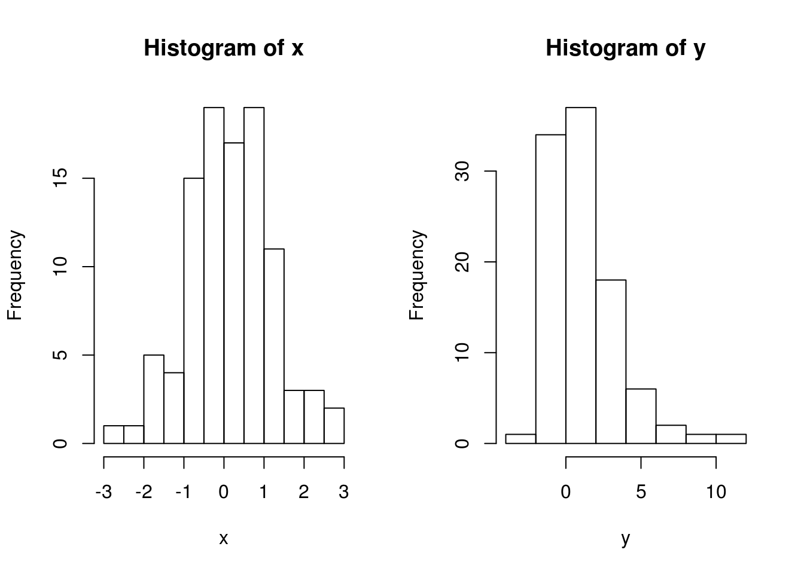

Chapter 3 Diagnostics and transformations for simple linear regressions
3.1 Airfares
There is evidence of non-random variance and it looks like a square term might give a better fit. There is also which seems to be a “bad” one – it hold leverage over the model.
However, the patterns of the residuals seem large because of the standardization of the residuals and whilst the non-linear pattern is apparent, modeling for it might not mean a much improved fit depending on how large it is.
The biggest problem with the predictions would occur if we were to predict fares for trips between cities with a larger distances.
3.2 True or false
Yes, this is a reasonable statement. A rationale is provided below:
x <- rnorm(100)
y <- x + x ^ 2 + rnorm(100)
par(mfrow = c(1, 2))
hist(x)
hist(y)
par(mfrow = c(1, 2))
fit1 <- lm(y ~ x)
fit2 <- lm(y ~ x + I(x ^ 2))
anova(fit1, fit2)## Analysis of Variance Table
##
## Model 1: y ~ x
## Model 2: y ~ x + I(x^2)
## Res.Df RSS Df Sum of Sq F Pr(>F)
## 1 98 365
## 2 97 90 1 275 298 <2e-16 ***
## ---
## Signif. codes: 0 '***' 0.001 '**' 0.01 '*' 0.05 '.' 0.1 ' ' 13.3 third
Solved previously.
3.4 Tryfos 1988
a
No. It seems as if variance is increasing with higher tonnages. There is also evidence of some bimodality and outliers. Moreover, the distribution of the residuals is somewhat non-random.
b
The prediction interval would probably be too short or perhaps even valid. We expect the intervals for the model to be too high for high tonnages and too low for low tonnages.
c
It appears to be something of an improvement. The residuals appear “more” random. Prediction intervals are likely to be more valid for this model because of the more random residuals.
d
The residuals’ variance decreases for higher tonnages. The distribution of the residuals is heavy-tailed.
3.5 Cars
a
This interpretation is based solely on a general hypothesis test and the coefficient of determination, which might be very misleading and says little about the assumptions of regression.
b
- There is at least one leverage point which requires further examination, potentially removal.
- The residuals are not normally distributed as they are light-tailed. We need to examine this and perhaps transform the data or fit a new model.
- The variance shows non-random patterns. It looks almost as if there are three different groups in the data and we might need to look at the data to see if there are any categorical variables that might need to be included to get a better fit.
c
The 3.11 model is a slight improvement in that it has
- better-distributed errors,
- less influence given to the outlier, and
- not-as-appearant patterns in the residuals.